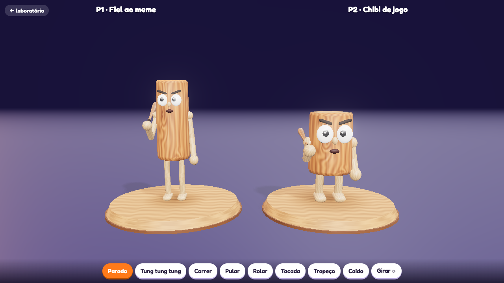

Os modelos
Linhas: cenário. Colunas: proporção do personagem. Clique numa imagem para ver paisagem, celular em pé e a tela de início.
Vitrine do personagem

Tung Tung Sahur modelado em código
Tronco com veios e nós procedurais, topo cortado com anéis, olhos arregalados, sobrancelhas grossas e o taco de beisebol. Nenhum arquivo de imagem nem modelo externo: tudo sai do three.js.
Animações por código: correr, pular (estica e amassa), rolar como um tronco, tacada com rastro, tropeço, caído e o batuque "tung tung tung" parado.
Abrir a vitrineO que vale para todos
3 faixasDeslize ou use as setas: ← → troca de faixa, ↑ pula, ↓ rola (no ar, desce rápido).
Tacada "TUNG!"Toque curto ou espaço. Quebra caixotes e barris na sua frente. É o diferencial em relação ao gênero.
Rolar como troncoPara passar por baixo, ele deita e rola, e as pernas e os braços somem.
Plataformas altasBarracas (vila) ou balsas de toras (rio) com rampa, no papel que os trens têm no Subway.
PerseguidorBater de lado aproxima o perseguidor; um segundo tropeço em até 6 s e ele te pega. Bater de frente encerra a corrida.
Poderes🧲 Ímã (10 s) e 🥁 Modo Sahur (8 s, invencível, quebra tudo).
AmanhecerO céu clareia com a distância. Na vila, você precisa acordar todo mundo antes do sol.
Passagem garantidaA pista é gerada por semente, e o teste roda o autopiloto por milhares de metros para provar que sempre há caminho.
Comparação
| Modelo | A favor | Contra |
|---|---|---|
| Vila do Sahur noite → amanhecer | Tem a ver com o meme: "sahur" é a refeição antes do amanhecer no Ramadã, e o "tung tung tung" é o chamado para acordar. As lanternas acesas dão um clima forte e um bom thumbnail noturno. O amanhecer como progressão tem sentido. | Cena noturna pede cuidado com o contraste no celular. A rua lembra mais o gênero (cidade), mesmo sem trem. Tem menos tipos de obstáculo (não tem vão). |
| Rio de toras manhã → dia | O trocadilho visual é forte: um tronco correndo sobre troncos. Os vãos de água trazem uma mecânica a mais (pular o canal). É claro e colorido (o que mais se lê no celular) e não se parece com o Subway em nada. | Ligação menor com o "sahur" (o tema vira só o personagem). A água e as toras instanciadas custam um pouco mais de GPU. O perseguidor (castor) é menos icônico que o galo. |
| P1 · Fiel ao meme | Silhueta reconhecível na hora: tronco alto, pernas e braços finos, o taco. É o que quem conhece o meme espera ver. | De costas, no celular em pé, vira um "palito" estreito. Os membros finos somem na tela pequena. |
| P2 · Chibi de jogo | Lê melhor de costas e no retrato, é mais fofo e expressivo, e os olhos maiores funcionam bem no ícone e no thumb. | Fica menos parecido com o meme original. Pode parecer "mais um mascote". |
Recomendação
Vila do Sahur + P1 como base, e o Rio de toras como segundo mundo (o amanhecer leva da vila até o rio).
- A vila é o que dá sentido ao nome: correr pela vila às 3h fazendo "tung tung tung" antes do sol nascer.
- O P1 é o personagem que as pessoas procuram. A leitura de costas melhora engrossando um pouco os membros e o taco, sem virar chibi.
- O rio aproveita o trabalho já feito, traz o vão de água como mecânica nova e dá variedade visual (dia × noite) no meio da corrida.